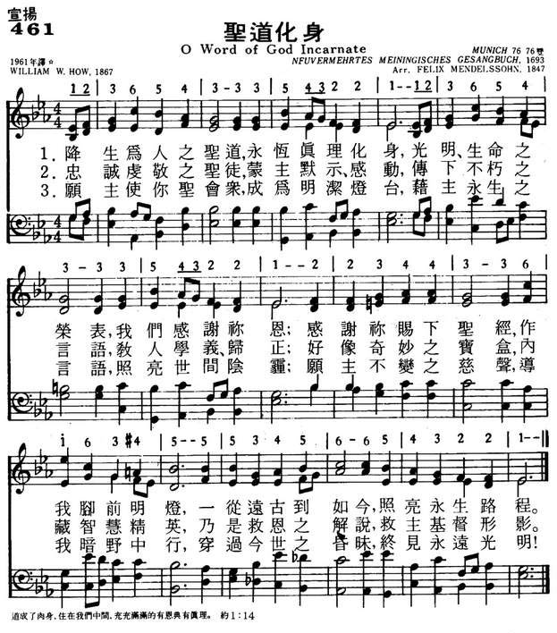
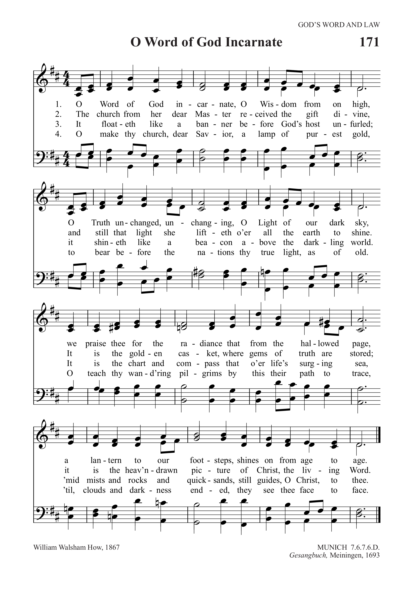

| 簡介 O Word of God Incarnate |
| The opening four lines of this hymn celebrate attributes of Christ that are revealed through holy scripture, which serves as a lantern, a chart, and a compass for the church in seeking to know Christ better. The setting of the tune comes from Felix Mendelssohn’s Elijah. |
|
|
|
||||||||||||||||||||||||||||||||||||||||||||||||||||||||||||||||||||||
|
461圣道化身 (NP561) 1.降生为人之圣道，永�痧u理化身， 光明、生命之荣表，我们感谢你恩； 感谢你赐下圣经，作我脚前明灯， 一从远古到如今，照亮永生路程。 2.忠诚虔敬之圣徒，蒙主默示、感动， 传下不朽之言语，教人学义、归正； 好像奇妙之宝盒，内藏智慧精英， 乃是救恩之解说，救主基督形影。 3.愿主使你圣会众，成为明洁灯台， 藉主永生之言语，照亮世间阴霾； 愿主不变之慈声，导我暗野中行， 穿过今世之昏昧，终见永远光明！
|
||||||||||||||||||||||||||||||||||||||||||||||||||||||||||||||||||||||
|
https://www.mred365.cn/szxg/7464.html
 https://www.mred365.cn/szxg/7464.html https://www.xueshengshi.com/?attachment_id=4347
https://hymnary.org/hymn/TPH2018/page/421
 |
|||||||||||||||||||||||||||||||||||||||||||||||||||||||||||||||||||||||
|
|
|
||||||||||||||||||||||||||||||||||||||||||||||||||||||||||||||||||||||
https://youtu.be/cFqTRWD2WD0
简介（一） （来源：《岁首到年终》）
William W. How，1823-1897
https://www.xueshengshi.com/?p=4357
道成肉身，住在我们中间，充充满满的有恩典有真理。 (约 1:14)
道成肉身是神的救恩从应许阶段转入执行阶段时， 破天荒而造成宇宙性震撼的一件关键性大事。
「道」，代表神性，「肉身」代表人性， 道成肉身意味百分之百的神性和百分之百的人性，在一个位格者耶稣基督身上以最完美调和的型态共存。
耶稣为执行救赎，必须拥有人性，因为人才有资格担当世人所犯的罪。 祂也必须拥有神性，因为神才有资格赦免人的罪。
祂的神性，洁净祂的人性，以致耶稣完全无罪，而无罪的人才有资格担当别人的罪；祂的神性赋予人性无限的价值，一个人予耶稣才能担当无数人的罪。
全能的主宰选择不消灭那背逆、堕落而恶贯满盈的人类，却定意差遣圣子代替人赎罪，使凡信靠祂的人白白称义。道成肉身是神的恩典。
本诗的作者 William W. How 1823 年生于英国 Shrewsbury，乃英国 19
世纪最后一位杰出的圣诗作家。一生谱了 60 首曲子，其中 25 首至今仍被采用。
他是英国伦敦东区贫民窟安立甘教会的主教，人们对他有两个称呼：其一为「穷人主教」，因工作于贫民区，奉献一生为穷人；其二为「巴士主教」，因不像传统的主教，深居宫抵，身着圣袍，不易接近。
William How 却经常塔巴士，生活工作在一般人中。 由于热爱圣诗，一旦灵感来到，就忘里偷闲写作。
「圣道化身」的曲调乃源自 1693 年古老德国的音乐，后由 19 世纪德国作曲家 Felix Mendelssohn 加以编成合唱谱。
1 降生为人之圣道，永�痧u理化身，光明、生命之荣表，我们感谢祢恩；
感谢祢赐下圣经，作我脚前明灯，一从远古到如今，照亮永生的路程。
2 忠诚虔敬之圣徒，蒙主默示、感动，传下不朽之言语，教人学义、归正；
好象奇妙之宝盒，内藏智能精英，乃是救恩之解说，救主基督形影。
3 愿主使你圣会众，成为明洁灯台藉主永生之言语，照亮世界阴霾；
愿主不变之慈声，导我暗野中行，穿过今生之昏昧，终见永远光明！
＊上帝是爱，从来没有一个人，不会不因这个意念所带来极大幸福所征服。── 祈克
The prevalent image in this hymn is light: God is the Light; his Word is a light for our path; and we, the church, must be a light for the nations. The author, William W. How (b. Shrewsbury, Shropshire, England, 1823; d. Leenane, County Mayo, Ireland, 1897), first published it with a subhead quotation from Proverbs 6:23: "For the commandment is a lamp: and the law is light; and reproofs of instruction are the way of life" (KJV). Some hymnodists have stated that the song is based on Psalm 119:105, which contains nearly the same imagery: "Your word is a lamp to my feet and a light for my path." Using intriguing word play, the hymn praises Christ as the "Word of God incarnate" and as the "Light" who has given us Scripture (often referred to as God's Word) as a "light" ("lantern") to guide the church (st. 1-2) and to inspire it to be a "lamp" for shining God's "light" to all the world (st. 2-3). The text also includes travel imagery: "footsteps" (st. 1), "chart and compass," "voyage" (st. 2), and "pilgrims" (st. 3). Singing this text, we pray that the church, the people of God, will always be led by the Scriptures to seek Christ, to whom the Scriptures point, and to bring the good news of his Word to the nations. This text was first published in the 1867 addition to Psalms and Hymns (1854), a supplementary collection How edited with Thomas B. Morrell.
Bert Polman, Psalter Hymnal Handbook
This song expresses our confidence in the truth and power of the word, as taught in Our World Belongs to God, paragraph 32 and Belgic Confession, 7: These scriptures are sufficient for they contain the will of God completely and “everything one must believe to be saved is sufficiently taught in it.”
O Word of God Incarnate, O Wisdom from on High, you mediated at creation, pouring your self-giving love into the world. You mediated our salvation, taking our flesh, taking our pain, taking the death we deserved. You mediate for us now as our flesh in heaven, Wisdom from on High who has gone back on High for us and for our salvation. And so we thank and praise you with tender hearts. Amen.
道成肉身（英語：Incarnation，希臘語：Ενσάρκωση，公教譯聖言成了血肉），基督教術語，正統基督教信仰認為，耶穌基督是三位一體中的第二個位格，即是聖子或道（或譯聖言、羅格思、邏各斯、物爾朋，古希臘語：λόγος，羅馬化：lógos），他通過處子瑪利亞的子宮，成為肉體，降生在世上。瑪利亞也因此擁有聖母（又譯為誕神女）的稱號。
這個信條在《尼西亞信經》中被確認，是基督教基本教義之一，基於對《聖經·新約全書》的理解[1]。該教義認為：三位一體中的聖子在降世之前與聖父同體，稱為「道」。後來這個「道」以肉身的形式降世成人，便是耶穌。所以耶穌就是道成肉身，既是完全的神，又是完全的人。[2]
幻影說反對道成肉身，認為耶穌不曾以肉體方式出生與形動，而是聖父在世間的投影化身。
養子說則認為，耶穌完全是一個人類，並無道成肉身，是因為耶穌的聖潔與道德，成為聖父指定的養子，他們以「收養」來比喻耶穌與聖父之間的關係。
亞玻里拿留派認為耶穌基督僅有人類的身體和魂，沒有人類的靈，乃是以道來代替「靈」。
這個單字源自於《約翰福音》1:14：「道成了肉身」的希臘文版本kai ho logos sarx egeneto，譯作拉丁文為 et Verbum caro factum est。古希臘語：Logos，即邏各斯，意為話語，或是道，譯為拉丁語：Verbum。古希臘語：σάρξ（sarx），意思是肉、肉身、身體，譯為拉丁語：caro，加上前綴詞 in-，成為動詞incarno，意為使它成為血肉。這個單字，最後成為英語：incarnation。
羅馬公教傳入中國時，傳教士借用中國傳統名詞「天主」稱呼唯一真神，此譯名乃源自中國神話中的天神──天主一詞；中國基督教新教則借用同屬中國傳統名詞「上帝、神」稱呼。《約翰福音》第1章第1節：「太初有道，道與神同在，道就是神」；這個「道」是新教的譯法，而公教則譯為「言」或「聖言」，聖經恢復本翻譯為「話」。
| Part of a series on |
| Christology |
|---|
 |
In Christian theology, the incarnation is the belief that Jesus Christ, the second person of the Trinity, also known as God the Son or the Logos (Koine Greek for "word"), "was made flesh"[1] by being conceived in the womb of a woman, the Virgin Mary, also known as the Theotokos (Greek for "God-bearer"). The doctrine of the incarnation, then, entails that Jesus is fully God and fully human.
In the incarnation, as traditionally defined by those Churches that adhere to the Council of Chalcedon, the divine nature of the Son was united but not mixed with human nature[2] in one divine person, Jesus, who was both "truly God and truly man". This is central to the traditional faith held by most Christians. Alternative views on the subject (see Ebionites and the Gospel of the Hebrews) have been proposed throughout the centuries, but all were rejected by Nicene Christianity.
The incarnation is commemorated and celebrated each year at Christmas, and also reference can be made to the Feast of the Annunciation; "different aspects of the mystery of the incarnation" are celebrated at Christmas and the Annunciation.[3]
The noun incarnation derives from the ecclesiastical Latin verb incarno, itself derived from the prefix in- and caro, "flesh", meaning "to make into flesh" or, in the passive, "to be made flesh". The verb incarno does not occur in the Latin Bible but the term is drawn from the Gospel of John 1:14 "et Verbum caro factum est" (Vulgate), King James Version: "and the Word was made flesh".
Incarnation refers to the act of a pre-existent divine person, the Son of God, in becoming a human being. While all Christians believed that Jesus was indeed the Unigenite Son of God,[4] "the divinity of Christ was a theologically charged topic for the Early Church."[5] Debate on this subject occurred during the first four centuries of Christianity, involving Jewish Christians, Gnostics, followers of Arius of Alexandria, and adherents of Pope Alexander of Alexandria, among others.
Ignatius of Antioch taught that "We have also as a Physician the Lord our God, Jesus the Christ, the only-begotten Son and Word, before time began, but who afterwards became also man, of Mary the virgin."[6] Justin Martyr argued that the incarnate Word was pre-figured in Old Testament prophecies.
The Catechism of the Catholic Church discusses the Incarnation in paragraphs 461–463 and cites several Bible passages to assert its centrality (Philippians 2:5-8, Hebrews 10:5-7, 1 John 4:2, 1 Timothy 3:16).[7]
The Nicene Creed is a statement of belief originating in two ecumenical councils, the First Council of Nicaea in 325, and the First Council of Constantinople in 381. As such, is it still relevant to most Christian churches today.[8] The Incarnation is always professed, though different Rites use different translations. The current translation of the Roman Catholic Church is: "For us men and for our salvation, he came down from heaven: by the power of the Holy Spirit he was born of the Virgin Mary, and became man."[9]
The Apostles' Creed includes the article of faith "He was conceived by the Holy Spirit and born of the Virgin Mary."[10] According to Pope John Paul II, by his incarnation Jesus is a figure of and has united himself to every human being, including the unborn at the moment of their life at conception.[11]
Eventually, teaching of Alexander, Athanasius, and the other Nicene Fathers, that the Son was consubstantial and coeternal with the Father, were defined as orthodox dogma. All divergent beliefs were defined as heresies. This included Docetism, Arianism, Nestorianism, and Sabellianism.
The most widely accepted definitions of the incarnation and the nature of Jesus were made by the First Council of Nicaea in 325, the Council of Ephesus in 431, and the Council of Chalcedon in 451. These councils declared that Jesus was both fully God: begotten from, but not created by the Father; and fully man: taking his flesh and human nature from the Virgin Mary. These two natures, human and divine, were hypostatically united into the one personhood of Jesus Christ.[note 1] According to the Catholic Church, an ecumenical council's declarations are infallible, making the incarnation a dogma in the Catholic Church.[12]
The incarnation implies three facts: (1) The Divine Person of Jesus Christ; (2) The Human Nature of Jesus Christ; (3) The Hypostatic Union of the Human with the Divine Nature in the Divine Person of Jesus Christ. Without diminishing his divinity, he added to it all that is involved in being human.[13] In Christian belief it is understood that Jesus was at the same time both fully God and fully human, two natures in one person.[14] The body of Christ was therefore subject to all the bodily weaknesses to which human nature is universally subject; such are hunger (Matthew.4:2), thirst (John 19:28), fatigue (John 4:6), pain, and death. They were the natural results of the human nature he assumed.[15]
The incarnation of Jesus is also one of the key factors which, alongside humans made in the image and likeness of God, forms Christian Anthropology. Specifically, incarnation is vital for understanding the concept of Divinisation of the Man, most well and elaborately developed in Orthodox Christianity and most well expressed by Church Fathers, such as St. Athanasius of Alexandria ("Therefore He was not man, and then became God, but He was God, and then became man, and that to deify us"[16]), St Cyril of Alexandria ("For we too are sons and gods by grace, and we have surely been brought to this wonderful and supernatural dignity since we have the Only Begotten Word of God dwelling within us."[17]) and numerous others.
The link between the incarnation and the atonement within systematic theology is complex. Within traditional models of the atonement, such as Substitution, Satisfaction or Christus Victor, Christ must be human in order for the sacrifice of the cross to be efficacious, for human sins to be "removed" and/or "conquered". In his work The Trinity and the Kingdom of God,[18] Jürgen Moltmann differentiated between what he called a "fortuitous" and a "necessary" incarnation.[19] The latter gives a soteriological emphasis to the incarnation: the Son of God became a man so that he could save us from our sins. The former, on the other hand, speaks of the incarnation as a fulfilment of the Love of God, of his desire to be present and living amidst humanity, to "walk in the garden" with us. Moltmann favours "fortuitous" incarnation primarily because he feels that to speak of an incarnation of "necessity" is to do an injustice to the life of Christ.
The significance of the incarnation has been extensively discussed throughout Christian history, and is the subject of countless hymns and prayers. For instance, the Divine Liturgy of St. John Chrysostom (c. 400), as used by Eastern Orthodox Christians and Byzantine Catholics, includes this "Hymn to the Only Begotten Son":
Additionally, the Divine Liturgy of Saint James includes this chant of "Let All Mortal Flesh Keep Silence" in its offertory:
The West Syriac Churches – Syriac Orthodox, Malankara Orthodox, Syro-Malankara Catholic, Syriac Catholic and Maronite Catholic – principally celebrating the Holy Qurbono of St. James (c. AD 60) have a similar ma‛neetho,[note 2] a poetic hymn, traditionally attributed to St. Severus, the Patriarch of Antioch (c. 465–538):
During the Reformation, Michael Servetus taught a theology of the incarnation that denied trinitarianism, insisting that classical trinitarians were essentially tritheists who had rejected Biblical monotheism in favor of Greek philosophy. The Son of God, Servetus asserted, is not an eternally existing being, but rather the more abstract Logos (a manifestation of the One True God, not a separate person) incarnate. For this reason, Servetus refused to call Christ the "eternal Son of God" preferring "the Son of the eternal God" instead.[22]
In describing Servetus' theology of the Logos, Andrew Dibb (2005) comments: "In Genesis God reveals Himself as the Creator. In John He reveals that He created by means of the Word, or Logos. Finally, also in John, He shows that this Logos became flesh and 'dwelt among us'. Creation took place by the spoken word, for God said 'Let there be...' The spoken word of Genesis, the Logos of John, and the Christ, are all one and the same."[23]
Condemned by both the Roman Catholic and Protestant churches on account of his heterodox Christology, Servetus was burnt at the stake for heresy in 1553, by the Reformed Protestants in Geneva, Switzerland. The French reformer John Calvin, who asserted he would ensure the death of Servetus if he set foot in Geneva because of his non-Reformed views on the Trinity and the sacrament of baptism, requested he be beheaded as a traitor rather than burned as a heretic, but the authorities insisted on executing Servetus by fire.[24]
Post-Reformation Arians such as William Whiston often held a view of the incarnation in keeping with the personal pre-existence of Christ. Whiston considered the incarnation to be of the Logos Who had pre-existed as "a Metaphysick existence, in potentia or in the like higher and sublimer Manner in the Father as His Wisdom or Word before His real Creation or Generation."[25]
Jacob Bauthumley rejected that God was "onely manifest in the flesh of Christ, or the man called Christ". Instead, he held that God "substantially dwells in the flesh of other men and creatures" rather than solely Christ.[26]
Servetus rejected Arianism because it denied Jesus' divinity[27] so it is certain that he would have also rejected Socinianism as a form of Arianism which both rejects that Jesus is God, and, also that Jesus consciously existed before his birth, which most Arian groups accept. Fausto Sozzini and writers of the Polish Brethren such as Samuel Przypkowski, Marcin Czechowic and Johann Ludwig von Wolzogen saw the incarnation as being primarily a function of fatherhood. Namely that Christ was literally both 'Son of Man' from his maternal side, and also literally 'Son of God' on his paternal side. The concept of the incarnation —"the Word became flesh and dwelt among us"— was understood as the literal word or logos of Ps. 33:6 having been made human by a virgin birth. Sozzini, Przypkowski and other Socinian writers were distinct from Servetus in stating that Jesus having "come down from heaven" was primarily in terms of Mary's miraculous conception and not in Jesus having in any literal sense been in heaven.[28][29] Today the number of churches with Socinian Christology is very small, the main group known for this are the Christadelphians, other groups include CoGGC and CGAF. Modern Socinian or "Biblical Unitarian" writers generally place emphasis on "made flesh" not just meaning "made a body", but incarnation (a term these groups would avoid) requiring Jesus having the temptable and mortal nature of His mother.[30]
In contrast to the traditional view of the incarnation cited above, adherents of Oneness Pentecostalism believe in the doctrine of Oneness. Although both Oneness and traditional Christianity teach that God is a singular Spirit, Oneness adherents reject the idea that God is a Trinity of persons. Oneness doctrine teaches there is one God who manifests Himself in different ways, as opposed to a Trinity, where God is seen as one being consisting of three distinct persons.
To a Oneness Pentecostal, Jesus is seen as both fully divine and fully human. The term Father refers to God Himself, who caused the conception of the Son in Mary, thus becoming the father of the child she bore. The term Son refers to the fully human person, Jesus Christ; and the Holy Ghost refers to the manifestation of God's Spirit inside of and around His people. Thus the Father is not the Son – and this distinction is crucial – but is in the Son as the fullness of His divine nature.[31] Traditional Trinitarians believe that the Son always existed as the eternal second person of the Trinity; Oneness adherents believe that the Son did not come into being until the incarnation, when the one and only true God took on human form for the first, last and only time in history.[32]
According to Latter-day Saint theology, two of the three divine beings of the Godhead have perfected, glorified, physical bodies, namely God the Father (Elohim) and God the Son (Jehovah). Instead of considering the Father, the Son, and the Holy Ghost as one in substance or essence with one another, Latter-day Saints understand the oneness of the Godhead as symbolic of Their perfectly united characteristics and purpose, while yet acknowledging that they are three separate and distinct beings.[33] To explain this divergence from Trinitarian oneness as literal rather than symbolic, Latter-day Saints commonly cite [34][35] Christ's Intercessory Prayer in John 17:20-23, which reads:
This conception of the Godhead differs from the Trinitarian view of the Incarnation in which only God the Son, temporarily possessed an incarnated, physical body while God the Father is and has always remained unembodied. Despite these differences, Latter-day Saint doctrine accepts a similar version of so-called ethical monotheism (which developed out of the Jewish tradition), in that Latter-day Saints believe that the Light of Christ (alternatively referred to as the Spirit of Christ) emanates from God the Son throughout the world, thereby influencing all people everywhere to do good and eschew evil. This teaching is best exemplified in the Book of Mormon in Moroni 7:13-19, which states:
https://tc.tgcchinese.org/article/10-things-you-should-know-about-the-incarnation
主耶穌基督的位格和祂的工作是基督信仰與福音的核心。除了「道成肉身」（約翰福音1:14）和成爲肉身的上帝的兒子爲我們活、替我們死、做我們的救主之外，別無拯救。除了那永恆之聖子取了人性、作我們的聖約代表，這世上沒有盼望。
在這聖誕節期更深地思想道成肉身的意義是很恰當的，以下這10點是我們應該抓住的重點。
1.道成肉身的位格或主體是永恆的聖子。
約翰福音1:14清楚地說：「道成了肉身「，換句話說，成了肉身的是在永恆中的子，而不是基督的神性。在永恆中與聖父和聖靈有關係的聖子爲了拯救我們，甘願自己降卑，順服他的天父，選擇取了人的樣式（腓2:6-8）。
2.三一神中的第二位，永恆的子，滿有上帝的形像，將聖父表明出來，因此是完全的神。
聖子與聖父、聖靈同等而完全地分享神性。作爲聖父的形像和準確的反映，聖子也是完全的神（西1:15；希1:3）。因爲基督是聖子，祂具有上帝一切的完美和屬性（西2:9）。作爲聖子，祂統管萬有，同受敬拜，同做一切的聖工（詩110:1；弗1:22；腓2:9-11；西1:15-17；來1:2-3；啓5:11-12）。
3.作爲聖子上帝，祂在與聖父和聖靈具有永恆秩序的關係中永遠存在，如今這一點榮耀地彰顯在祂的道成肉身上。
唯獨藉著聖靈從聖父而來的聖子（而不是其他的神聖位格）道成了肉身，這是合宜的（約1:1-2，14，18）。在道成肉身中，聖子彰顯了祂對父神的神聖的、像兒子一樣順服的依靠，祂總是在通過聖靈與聖父的關係中行動（約5:19-30，可1:12，路4:1-21）。無論是在永恆中還是在道成肉身中，聖子從不聽從自己或獨立行事，總是與聖父和聖靈密不可分。
4.道成肉身是有增無減的行動。
在永恆中具有神性的聖子，在道成肉身時並沒有改變或棄掉祂的神性，反而增加了第二性，也就是有人的身體和靈魂的人性（腓2:6-8）。因此，耶穌作爲個體有一個位格（聖子）而如今具有二性，祂既是完全的神，又是完全的人。
5.聖子所取得的是完全並且全然無罪的人性。
基督的人性不曾墮落，也沒有受到罪的後果的污染。我們與生俱來的反對上帝的悖逆傾向不在耶穌所取的人性之中。耶穌完全經歷了活在這敗壞世界中的結果，卻與亞當犯罪所帶給全人類的罪疚感和罪性無關。事實是，耶穌從未犯過任何罪，祂也不能犯罪（太3:15；約8:46；來4:15；7:26；彼前1:19）。雖然他與我們一樣受過試探，但他完全順服父神，以至於死，成爲我們聖約的中保，降世爲人的基督耶穌因此成就了我們的救贖（提前2:5；來5:5-10）。
6.童貞女懷孕生子，是道成肉身榮耀的途徑。
道成肉身完全是超自然之舉，彰顯我們的三一真神救贖祂的子民的既有主權、又有恩典的主動作爲（太1:1-25；路1:26-38）。童貞女感孕是聖子爲自己加上人性的時候與方式。藉著童貞女感孕，三一神爲聖子創造了一個新的人性，因著此舉，我們在耶穌裡與上帝真實地面對面相交——聖子並非內住在我們肉身之中或遮蓋我們的肉身，而是在毫不減少的榮耀中加上了人性。雖然我們看見的是成爲人的耶穌，但祂卻不僅僅是一個人：祂是主，是聖子，但祂通過成爲住在我們當中的一個人降卑自己，將自己的榮耀隱藏。
7.從受孕起，聖子限制自己的神性生命，同時沒有用神性取代人性的限制。
道成肉身的結果，是聖子作爲一個真實的人活在世上，祂的身體、精神、意志和心理各方面都與起初的人性一樣正常。成了肉身的聖子經歷了完全的人性生命中的奇妙與軟弱。祂的智慧與身量曾一起增長（路2:52），祂經歷了淚水和喜樂，並爲祂子民的救贖承受了死亡的苦痛，經歷了榮耀的復活（約11:33，35；19:30；林前15:3-4）。
8.然而聖子並非孤單地受限在人性中，因爲他仍然繼續在祂的神性裡及藉著祂的神性行事。
這個真理的最佳說明是，除了在基督的生命和事奉中的其它神聖行動，在肉身中的聖子仍繼續托住萬有（西1:16-17；希1:3）。在基督裡繼續有可區分的二性，二性各自保持自身的屬性和整全，然而聖子可以同時通過這二性行動。因此，聖子不會徹底被人性侷限，祂也可以在人性之外的神性中行動。
聖子在何時及如何在神人二性中行動，最好從上帝的三個位格在拯救我們的救贖歷史中的彼此關係來了解。聖子行事一直是出於聖父、又藉著聖靈，與父和靈不可分割，現在祂繼續如此行事，繼續以一個順服的兒子的身份作我們在聖約中的代表和替代者。在肉身中，聖子的神性或人性都沒有絲毫減損。
9.聖子取了人性，成爲第一個新造的人、我們的偉大中保和新約的頭。
作爲道成肉身的聖子，我們的主耶穌基督在祂的降生、受死與復活中，反轉了第一個亞當所行的，成爲末後的亞當，成爲我們的先鋒和元帥（來2:10）。道成肉身的結果使聖子有完美的資格，能滿足我們的每個需要，特別是罪得赦免的需要（來2:5-18；7:22-28；9:15-10:18）。
10.道成肉身的聖子是全然獨特的，唯有祂是我們的主和救主。
耶穌是獨一無二的。因著上帝所有的榮耀與道德的完美，以及罪在上帝面前的本質，除了聖子的道成肉身和祂爲我們所做的一切工作之外，別無拯救（約14:6；徒4:11）。
唯獨聖子能滿足上帝審判我們的公義和對完全順服上帝的要求（羅5:12-21）。
唯有成了肉身的聖子能與我們認同，成爲我們的代表和代贖（來5:1）。
我們償還罪債、完全恢復反映上帝形像的尊榮，這樣的得救的盼望只有在我們的主耶穌基督裡才能成就。（羅3:21-26；來2:5-18）
http://www.congsing.org/o_word_of_god.html
| O Word of God incarnate, | John 1:14; Rev. 19:13 |
| O Wisdom from on high, | Is. 11:2-3; 1 Cor. 1:24, 30 |
| O Truth unchanged, unchanging, | John 14:6; Heb. 1:12; 13:8 |
| O Light of our dark sky; | John 1:5 |
| we praise thee for the radiance | Ps. 19:8b; 119:130 |
| that from the hallowed page, | Rom. 1:2 |
| a lantern to our footsteps, | Ps. 119:105; 2 Pet. 1:19 |
| shines on from age to age. | Ps. 119:89 |
| The church from her dear Master | John 3:34; 17:8; Rev. 1:11 |
| received the gift divine, | Rom. 15:4 |
| and still that light she lifteth | Matt. 5:15-16; 28:20 |
| o’er all the earth to shine. | Matt. 5:14; Phil. 2:15–16 |
| It is the golden casket, | Ps. 119:11; Matt. 13:52 |
| where gems of truth are stored; | Ps. 119:14; Prov. 3:15 |
| it is the heav’n-drawn picture | |
| of Christ, the living Word. | Luke 24:27; John 5:39b; 1 John 1:1 |
| It floateth like a banner | |
| before God’s host unfurled; | |
| it shineth like a beacon | |
| above the darkling world. | |
| It is the chart and compass | |
| that o’er life’s surging sea, | |
| ’mid mists and rocks and quicksands, | |
| still guides, O Christ, to thee. | |
| Oh, make thy church, dear Savior, | |
| a lamp of purest gold, | Rev. 1:20 |
| to bear before the nations | Ps. 119:46; Is. 60:3 |
| thy true light, as of old. | Is. 42:6b; Acts 26:17–18 |
| Oh, teach thy wand’ring pilgrims | Ps. 119:19 |
| by this their path to trace, | Ps. 119:1, 59 |
| till, clouds and darkness ended, | 2 Pet. 1:19b |
| they see thee face to face. | 1 Cor. 13:12; Rev. 22:4 |
When he was six years old, one of our sons ran down the street with his eyes closed—and bumped square into a mailbox. “Why on earth were you running with your eyes closed?” asked Dad. “Because I run faster that way,” answered the boy with the swelling and bleeding face. He was learning, the hard way, one of life’s lessons: that you must see where you are going if you are to get there.
It’s a lesson we all must continue to learn because—like son, like father—it’s tempting sometimes to think reality will only get in our way if we pay too much attention to it. But when we neglect the light and the guidance God has given us, we end up wandering in a wilderness, or worse. We do not get where we need to go without God’s word. It is our very life (Deut. 32:47).
To learn this lesson we sing “O Word of God Incarnate,” across denominational lines probably the best-known hymn about Holy Scripture. In the first four lines we address our prayer, appropriately enough, not to God generally but to the second person of the Trinity in particular, to the Word made flesh. Here is how the Dutch Reformed theologian Herman Bavinck explained this name of Christ:
He is the Logos in an utterly unique sense: Revealer and revelation at the same time. All the revelations and words of God, in nature and history, in creation and re-creation, both in the Old and the New Testament, have their ground, unity, and center in him. He is the sun; the individual words of God are his rays. The word of God in nature, in Israel, in the NT, in Scripture may never even for a moment be separated and abstracted from him. God’s revelation exists only because he is the Logos. He is the first principle of cognition, in a general sense of all knowledge, in a special sense, as the Logos incarnate, of all knowledge of God, of religion, and theology (Matt. 11:27).[1]
We express our thanks for the Bible, and our desire to handle it faithfully, to him who is its ground, unity, and center.
The author of the hymn, W. Walsham How (who also wrote “For All the Saints”), intended it as an extended meditation on the 105th verse of Psalm 119: “Your word is a lamp to my feet and a light to my path.” Stanza 3 introduces four additional metaphors, all variations on the psalmist’s “light to my path,” to help us imagine the Bible showing the way. First, it’s like a banner, our Lord’s standard, under which we march and toward which we rally in battle. Second, it’s like a hilltop beacon, spreading tidings at night (as in Gondor), or like a lighthouse beacon warning of danger. Third, it’s another navigational aid: a chart, showing us the outline of the sea of life, the position of its rocks, sandbars, channels, buoys, and anchorages. And fourth, it’s a compass, so we don’t lose our orientation.
All of which assumes a purpose, or destination. Guidance is only needed by those who are going somewhere, and thus each of the last three stanzas ends by calling our attention to where we are going: to Christ, in whom is eternal life (and to whom, remember, our prayer was addressed). The “ground, unity, and center” of the Bible is also its end: “Revealer and revelation at the same time.” The references to Christ intensify from stanza to stanza, from “picture” at the end of stanza 2, to our destination at the end of stanza 3, to seeing him “face to face” at the end of stanza 4. Then, when clouds and darkness are no more (compare stanza 1, line 4, with stanza 4, line 7) we shall no longer need a light to find the light.
The term casket in stanza 2 need not put off congregants if the pastor takes a moment, once and for all, to explain; congregants may think of it as a synonym for coffin, but in fact that usage is not a synonym but an old euphemism. A casket really is a small box for keeping precious things like jewels or letters. In recognition of the value of what’s inside, the box itself is often ornate and made of precious materials. See, for example, this. So a casket is a treasure chest—just like the Bible. When nineteenth-century Americans began calling coffins “caskets,” it was an expression of care for the contents of the box: their loved ones’ bodies, which “being still united to Christ, do rest in their graves, till the resurrection” (WSC Q. 37).
Just as the Bible’s “gems of truth” are stored in words of unsurpassed literary beauty, so, too, this poem as we sing it today is adorned with a tune (MUNICH) of melodic and harmonic grace. Part-singing congregations will enjoy it. But especially helpful is the way both melody and harmony seem to wander in lines 6 and 7 only to regain their bearings for the last line, precisely where, in three out of four stanzas, the poem calls our attention to the path’s destination, Christ. Consider how this works in stanza 3. Lines 1, 3, and 5 cadence melodically on “mi” (F-sharp). Lines 2 and 4 cadence on “do” (D). But line 6 cadences on “sol” (A), and line 7 higher yet, on “la” (B), from which we calmly descend back down the scale to “do.”
So melodically there’s some tension for “life’s surging sea” and “mists and rocks and quicksands,” but there’s resolution for “guides, O Christ, to thee.” Similarly, the harmony of line 6 gravitates toward a key other than the home key at “life’s surging sea,” the harmony of line 7 gravitates toward yet another key at “mists and rocks and quicksands,” but all these deviations are corrected at “guides, O Christ, to thee”: as the melody descends its D-major scale, the chords below outline the essence of the home key.
[1] Herman Bavinck, Reformed Dogmatics, volume 1, subparagraph 108, translated by John Vriend (Grand Rapids: Baker Academic, 2003), page 402.
"O Word of God Incarnate"
William W. How
The United Methodist Hymnal, No. 598
https://www.umcdiscipleship.org/resources/history-of-hymns-o-word-of-god-incarnate
William W. How
O Word of God incarnate,
O Wisdom from on high,
O Truth unchanged, unchanging
O Light of our dark sky:
we praise you for the radiance
that from the hallowed page,
a lantern to our footsteps
shines on from age to age.
Anglican Bishop William Walsham How (1823-1897) is best know for one of the
great All Saints Day hymns, “For all the saints who from their labors rest.”
While one of the great legacies to the church from the 19th century, we actually
learn more about How from his hymn on scripture, “O Word of God incarnate.”
If not a unique bishop of his time, How was certainly an anomaly. He rejected
offers to serve as bishop in prestigious settings such as Manchester and Durham
and instead ministered in a slum area of London, a choice that resulted in his
designation as “the poor man’s bishop.” While other bishops often lived in
luxurious settings and were conveyed by private coach, How lived and worked with
his people, traveling by public transportation.
While many churchmen were appalled by the doctrine of evolution and the feeling
that science challenged the truth of the Bible, How was much more discerning. In
his 1887 sermon “The Bible and Science,” How observed that evolution included
many facts and theories that were difficult to dispute, and added one could not
state categorically that “[a]ll such-like speculations are straight against
God’s Word and therefore utterly untrue.”
Even Thomas Henry Huxley (1825-1895), grandfather of Aldous Huxley, and a leader
in the scientific debate in England who was often known as “Darwin’s Bulldog,”
cites the sermon in his book, Science and the Christian Tradition (1902).
According to hymnologist Albert Bailey, Huxley “says that the Bishop was one of
the few people who so treated . . . religion and science that he felt he could
go along with him.”
Yet at the same time, this Oxford-educated clergyman had a “high” view of
Scripture as this hymn attests. This hymn in praise of the Bible is based on
Psalm 119:105, “For the commandment is a lamp; and the law is light; and
reproofs of instruction are the way of life.” It first appeared in a joint
publication, Supplement to Psalms and Hymns (1867), with T.B. Morrell.
The first line of the hymn echoes John 1:1: “In the beginning was the Word, and
the Word was with God, and the Word was God.” Successive biblical metaphors
elaborate the nature of the Word: “Wisdom” (James 3:17), “Truth” (John 14:6),
“Light” (John 1:4), “lantern to our footsteps” (Psalm 199:105).
In stanza two, the church, given the Word from “our Savior,” becomes its
custodian who is to lift the light “o’er all the earth to shine.” The Bible is a
“sacred vessel” (originally “casket”) “where gems of truth are stored.” The Word
paints a “heaven-drawn picture of Christ, [who is] “the living Word.”
Stanza three begins with an evangelical focus, as “Scripture is a banner before
God’s host unfurled”—a sense of what the Anglican Church calls the Church
Militant. In the next line the focus switches from “banner” to “beacon”—an image
of hope. The Bible then becomes a “chart and compass”—a meaningful image for a
seafaring nation whose exploits at sea were both a source of wealth and a
protection.
The final stanza is a prayer that petitions Christ to “make your church… a lamp
of purest gold” and to “teach your wandering pilgrims by this their path to
trace.” Ultimately, the goal is eschatological, where we will see Christ in
heaven “face to face.”
How’s 54 hymns were all written between 1858 and 1871 while he was a rector at
Whittington, before becoming Suffragan Bishop of East London, and in 1888, the
first Bishop of Wakefield. He once said, “A good hymn should be like a good
prayer—simple, real, earnest, and reverent.” How was a modernist who studied
thoughtfully the latest scientific thinking of his day and still fully embraced
Scripture—a model for us over 100 years later.
Dr. Hawn is professor of sacred music at Perkins School of Theology at SMU.
 This
is part of an intermittent series I’ve called “Hymns We Should Sing
More Often.” The aim is to remind us (or introduce for the first time)
excellent hymns that are probably not included in most church’s
musical canon. A few hymns–like Holy,
Holy, Holy or Come, Thou
Fount of Every Blessing—are familiar to many congregations and
get sung in conferences and other large gatherings. Unfortunately, for
a growing number of churches, there are no hymnals in the pews (or on
the chairs), and consequently there is little opportunity to draw from
the deep well of Christian hymnody. Most of the hymns in this series
are not unfamiliar, just underutilized. I hope you will enjoy learning
about these hymns as much as I have and enjoy singing them even more.
This
is part of an intermittent series I’ve called “Hymns We Should Sing
More Often.” The aim is to remind us (or introduce for the first time)
excellent hymns that are probably not included in most church’s
musical canon. A few hymns–like Holy,
Holy, Holy or Come, Thou
Fount of Every Blessing—are familiar to many congregations and
get sung in conferences and other large gatherings. Unfortunately, for
a growing number of churches, there are no hymnals in the pews (or on
the chairs), and consequently there is little opportunity to draw from
the deep well of Christian hymnody. Most of the hymns in this series
are not unfamiliar, just underutilized. I hope you will enjoy learning
about these hymns as much as I have and enjoy singing them even more.
**********
I am always looking for good songs that can lead us into the preaching of God’s word, and this hymn does the trick. works well as a prayer of illumination or a prelude to it. It fits well into Sunday morning liturgy immediately before the sermon because it centers its hearers on the light we receive from the incarnate Word of God in the form of the Bible. The written Word is a “lantern to our footsteps”, which “shines from age to age”; it is the “chart and compass” that guides us through the perils of life to Christ. When the hymn was first published in 1867, was listed as its subheading—“For the commandment is a lamp and the teaching a light, and the reproofs of discipline are the way of life.”
William How (1823-1897), the author of the hymn, was ordained in the Church of England in 1847. He later became bishop in east London and in time came to be known as the “poor man’s bishop” and the “children’s bishop” because of his work among the poor and destitute in London. He wrote around 60 hymns in his lifetime, many of which were for children. Among How’s more well known hymns is For All the Saints.
The music that we sing How’s words to is from a Felix Mendelssohn arrangement of a tune that dates back to at least 1593. Mendelssohn set the old tune to new words and inserted it in his oratorio Elijah as the quartet “Cast Thy Burdens upon the Lord.” Mendelssohn was an accomplished musician and one of the great composers in the classical/romantic period.